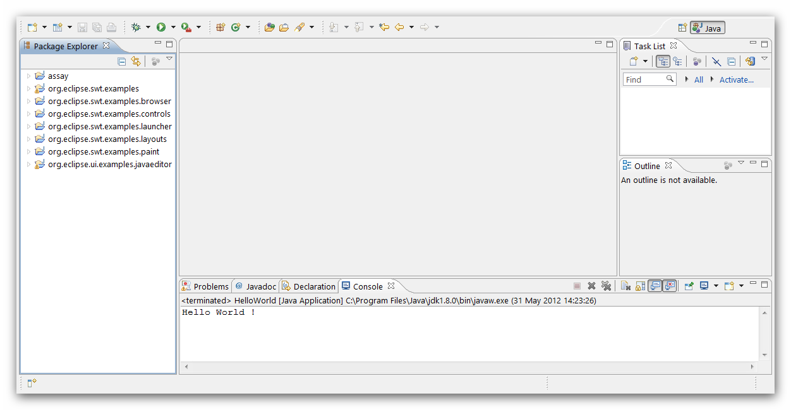
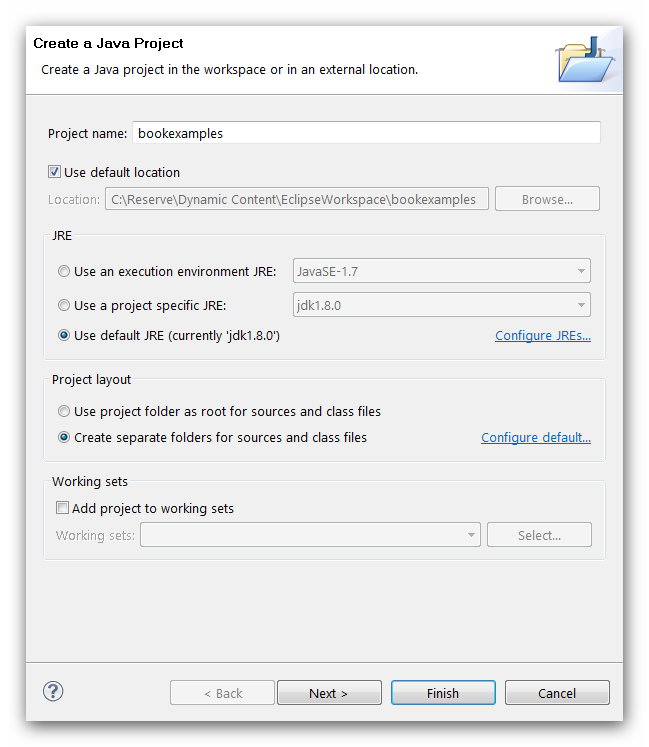
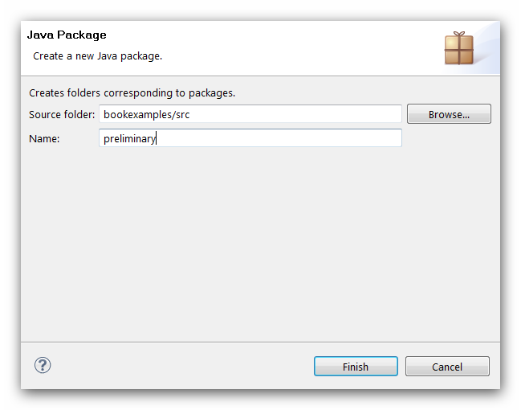
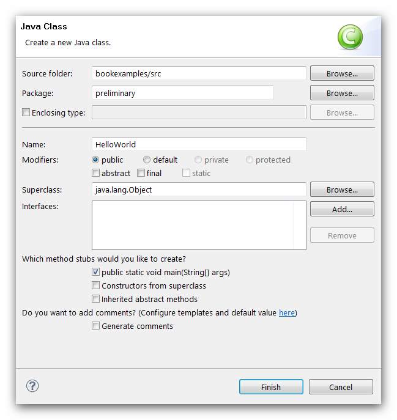
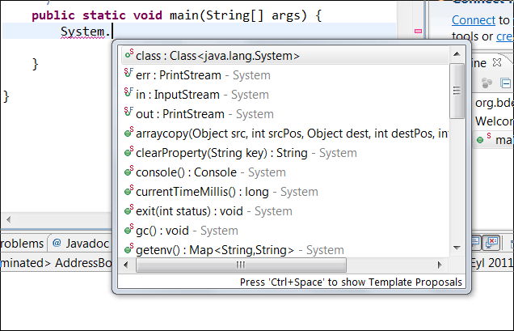
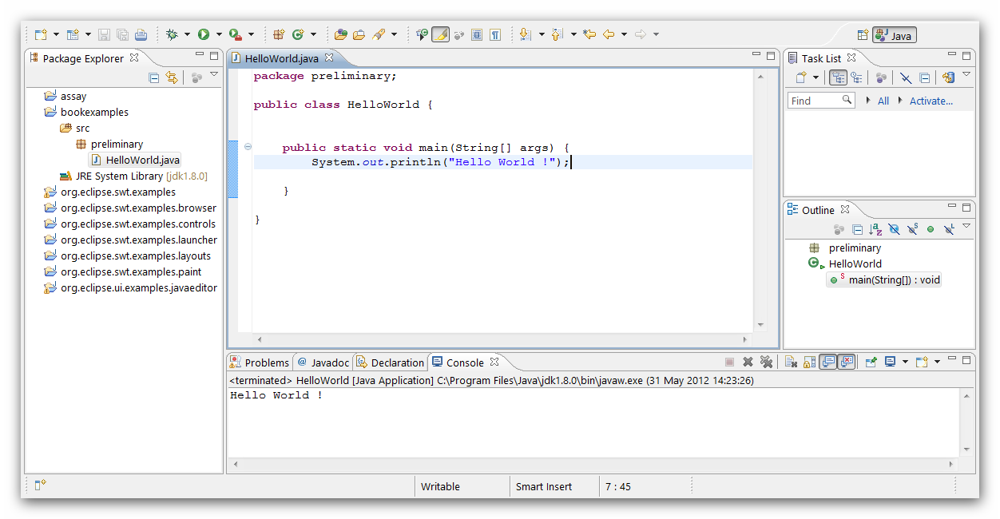

1.5 - Eclipse Platform
1.5.1 - Downloading, Installing and Configuring Eclipse
Eclipse platform may be downloaded from his site. Among several choices from this site, we will select Eclipse Indigo Java version which is the latest stable platform. The downloaded zip file may be unzipped to any convenient folder. Eclipse will not need further installation. Just run eclipse.exe for activating the platform.
Eclipse will ask first the location of the workbench. Workbench is a top folder where some project lies. Choose a convenient folder for using as workbench and wait for the welcome window of the Eclipse.
The first thing to be done after installing Eclipse, is checking the updates from Help>Check For Updates menu and install new updates if it exists any.Then we can begin to configure our Eclipse platform. Elon University has very useful introduction videos for setting preferences of Eclipse. It is worth to study this video lecture for having the experience about how to personalize important settings from the vast customisation possibilities of the Eclipse platform. Note that the preferences are somehow reflecting the personal taste, but some settings described in this video lecture is worth to be applied.
We can close the welcome window of Eclipse and pass to the Java perspective:

image 1.5.1 : 1 - Eclipse Java Perspective
Each Eclipse perspective has specialsed views. Some of them are closed while some of them are visible. We can change the place for these views but for the moment we won't need this. There is an Editor window in the middle, Package Exploer window in the left , tabbed display window at the bottom, as we can see from the figure above.
We will open a new project folder for our examples. From the file menu choose New>Project a project menu will be opened, we will choose Java>Java project and the project description form will be opened:

image 1.5.1 : 2 - Eclipse Java Project Creation Form
When a new project is opened in an Eclipse Workspace, anew folder whose name is the project folder is created. Eclipse may create separate source and class folders within the project folder according to the instructions of the user. Here we can see the src folder which holds the source codes.
Java classes are assembled within different package folders in a project. Declaring a new package causes Eclipse to create a new folder with a package name within the project folder:

image 1.5.1 : 3 - Eclipse Java Package Creation Form
After the pakage is defined, we may now define classes within that package. This is accompished by defining new class from the file menu.

image 1.5.1 : 4 - Eclipse Java Class Definition Form
After the class is created, we will delete all unneccesssary comments and start typing, System in the main() method., followed by a period as it is displayed below:

image 1.5.1 : 5 - Eclipse Code Assist
When we type System. a new Code Assist window opens and present possible code that may follow. This is called Code Assist feature of the Eclipse platform. The code, may be completed as shown below:

Execution of The HelloWorld.class
image 1.5.1 : 6 - Execution of The HelloWorld.class in the Eclipse Platform
Instead of definition in the default package, HelloWorld class is defined in a prelimary package. This is more sound in terms of Java functionality.
We are now in a position to produce our own stand-alone Java programs for our examples. More to come in OOP. For the moment we should focus on core Java features i.e. the basic language syntax of the Java programming language
Polyglott HTML5(XHTML5 compliant HTML5 code)